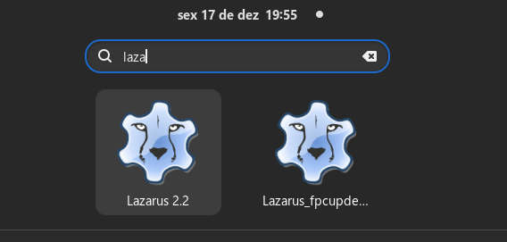

Depois de instalar o FPC dos repositórios, você pode seguir as instruções nesta página para prosseguir com a instalação do Lazarus-IDE.
Caso ainda não tenha instalado o FreePascal Compiler(FPC, daqui em diante), então siga este link:
Instalação no Linux: Instalação do FPC a partir dos repositórios
Depois de instalar o FPC dos repositórios, usaremos o git para instalar Lazarus-IDE no HOME do usuário. Instalar o Lazarus-IDE em nossa $HOME é muito bom porque não necessitaremos de permissões especiais para aplicar patches ou correções em pacotes instalados ou que instalaremos.
Antes de prosseguir precisamos fazer um ajuste importante em nosso ambiente Linux, ao executar programas construídos no Lazarus no ambiente Linux pode surgir a seguinte mensagem de dependência no terminal:
Gtk-Message: 00:00:00.000: Failed to load module "pk-gtk-module"
O programa executa normalmente, mas essa mensagem ou a falta dessa dependência pode indicar que algum aspecto visual não está como deveria ser, para corrigir o problema, execute:
O programa executa normalmente, mas a falta dessa dependência pode indicar que algum aspecto visual não está como deveria ser, para corrigir o problema, execute:
sudo -i
echo "/usr/lib64/gtk-3.0/modules" > /etc/ld.so.conf.d/pk-gtk.conf
echo "/usr/lib64/gtk-2.0/modules" > /etc/ld.so.conf.d/gtk2.conf
ldconfig
E a mensagem de dependência no terminal sumirá.
A maioria dos que estiverem lendo essas instruções irão preferir usar o Instalador do Lazarus ou o fpcupdeluge. Porém há uma terceira via que funciona para Windows e Linux,a instalação diretamente do código fonte do Lazarus, parece complicado, mas não é se você já baixou ou compilou programas via GIT antes. Há algumas vantagens nisso, a versão binária compilada por você mesmo será específica para o seu hardware e portanto mais veloz que a versão do instalador. Será similar ao fpcupdeluge, porém mais econômica e rápida porque usaremos o FreePascal(FPC daqui em diante) pré-instalado.
Como o Lazarus está num repositório GIT, temos outra vantagem>: atualização de versão.
Siga as instruções abaixo, embora sejam para o Linux, os princípios são os mesmos para Windows.
rpm -ql fpc-src.noarchDescobrirá e notará que foram instalados em /usr/share/fpcsrc, anote este caminho porque precisaremos dele mais tarde.
rm -fR ~/.lazarus
cd ~ mkdir lazarus cd lazarus git clone https://gitlab.com/freepascal.org/lazarus/lazarus.git
mkdir configs
git branch --all
Então será listado todos os branchs existentes no repositório oficial:
E então escolha um branch das que foram listadas, como exemplo escolharemos a fixes_2_2 que incluirá a 2.2.x mais os fixes, isto é, as correções da série 2.2. Mas se desejar outra, fique a vontade. Para prosseguir com o nosso exemplo usando o fixes_2_2:
git switch fixes_2_2
make clean make bigide(demora um pouco, mas vai compilar tudo)
cd .. mv lazarus lazarus-2.2 cd lazarus-2.2/
gedit ~/.local/bin/lazarus-2.2.sh
Cole este conteúdo:
Salve o script acima e depois execute no terminal:
chmod a+x ~/.local/bin/lazarus-2.2.sh
Usamos o nome lazarus-2.2.sh quando precisar executar o lazarus pelo terminal.
cp ~/lazarus/lazarus-2.2/images/icons/lazarus.ico ~/.local/share/icons
gedit ~/.local/share/applications/lazarus-2.2.desktop
e então cole as instruções abaixo:
Salve o arquivo, a partir de agora, o Lazarus 2.2 aparecerá no menu de seu sistema se procurar pelo nome:

A imagem acima é possivel notar que temos nosso Lazarus 2.2, ao lado de uma instalação do fpcupdeluge.
Recomendo que use o menu do seu sistema para executar o Lazarus, mas caso queira fazê-lo pela linha de comando use o script criado:
lazarus-2.2.sh
Isso garantirá a execução com a opção --pcp=~/lazarus/lazarus-2.2/configs e evitará lazarus diferenes contaminem configurações diferenes.
Eventualmente você poderá querer baixar novas versões ou atualizações, trata-se dum repositório git então não haverá problemas, sempre que precisar recorra aos comandos:
git switch main git pull
Onde main é o branch atual, mas você pode trocá-lo se preferir e então repita os procedimentos anteriores que culminarão no ‘make bigide' mencionado nos passos anteriores.
Geralmente, as correções do Lazarus estarão listadas com o nome de branchs com o prefixo‘fixes’, então será fácil identificar as atualizações.
TODO: Adicionar opções para crosscompiling, da forma como esta acima, os projetos serão compilados apenas para o ambiente do host, isto é, se estiver num amd64 apenas compilará para 64bits.